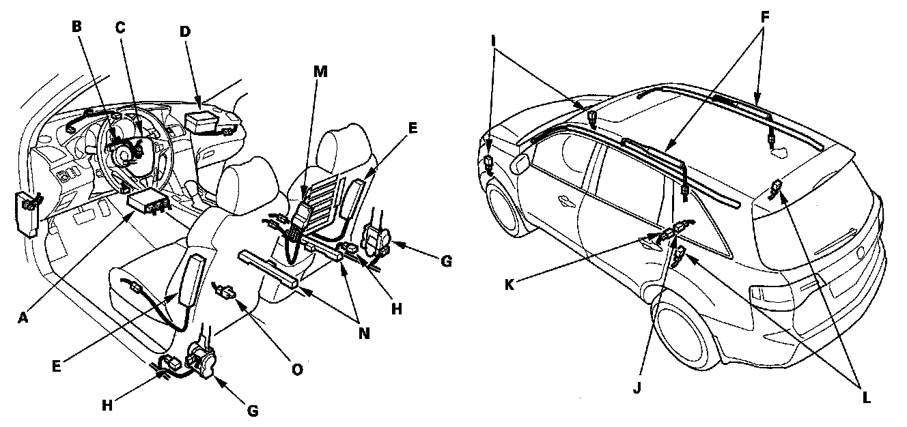
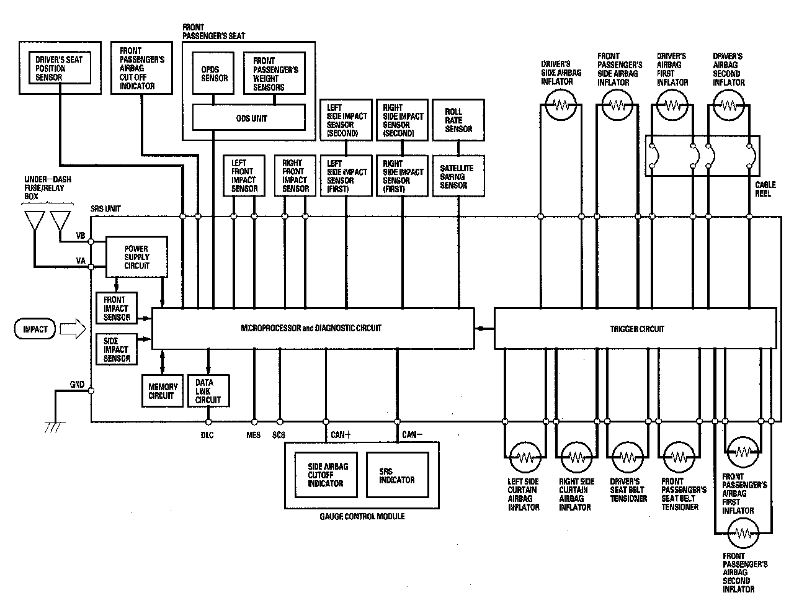
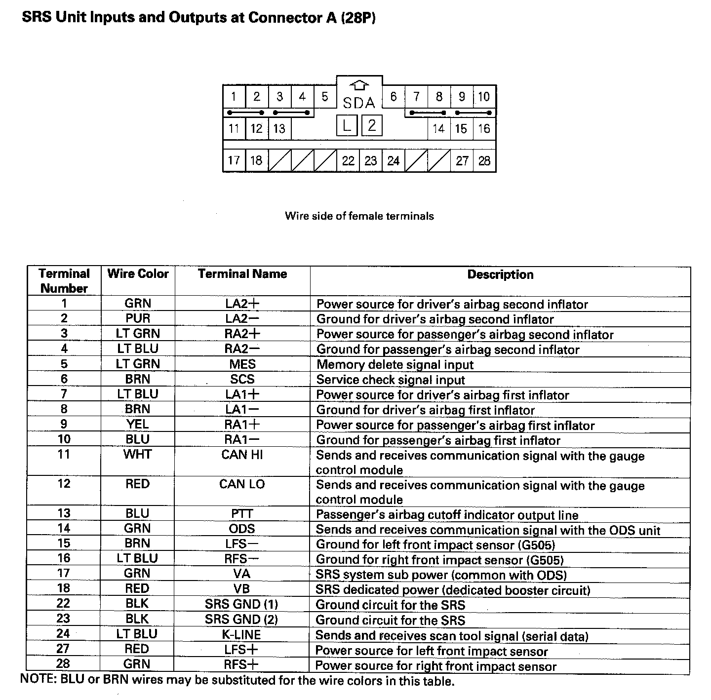
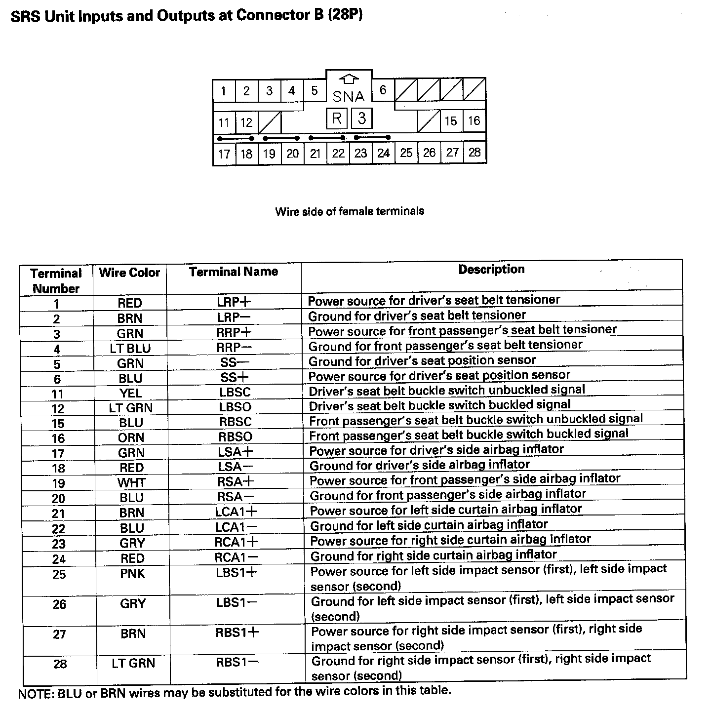
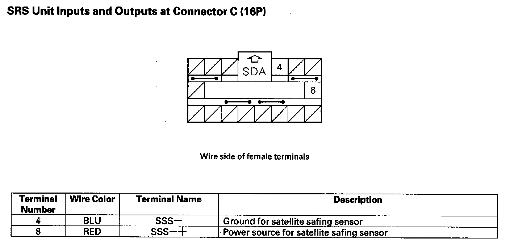

Air Bag Systems: Description and Operation
SRS System DescriptionSRS Components
Airbags
The SRS is a safety device which, when used with the seat belt, is designed to help protect the driver and front passenger in a frontal impact exceeding a certain set limit. The system consists of the SRS unit, including safing sensor and impact sensor (A), the cable reel (B), the driver's airbag (C), the front passenger's airbag (D), side airbags (E), side curtain airbags (F), seat belt tensioners (G), side impact sensors (first) (H), front impact sensors (I), roll rate sensor (J), satellite safing sensor (K) and side impact sensors (second) (L).
Since the driver's and front passenger's airbags use the same sensors, both normally inflate at the same time. However, it is possible for only one airbag to inflate. This can occur when the severity of a collision is at the margin, or threshold, that the SRS unit determines whether or not the airbags will deploy. In such cases, the seat belt will provide sufficient protection, and the supplemental protection offered by the airbag would be minimal.
Front Passenger's Weight Sensors
The ODS unit (M) is in the front passenger's seat-back along with the weight sensors (N). The weight sensors detect the weight on the seat, and send the information to the ODS unit. If the total weight is about 65 lbs (30 kg) or less, the ODS unit sends a signal to the SRS unit to prevent the passenger's airbag from deploying. When the passenger's airbag is disabled, the passenger airbag cutoff indicator on the center panel comes on to alert the driver that the front passenger's airbag will not deploy in a front-end collision.

Driver's Seat Position Sensor
The driver's seat position sensor (O) is under the driver's seat on the left side. When the driver's seat is moved to its full forward position, the deployment of the driver's airbag is moderated to decrease its force of impact during a front-end collision.
Roll Rate Sensor
The roll rate sensor is located under the second row seat. It detects the amount of roll of the vehicle and sends the information to the SRS unit. The SRS unit uses this information to determine if a vehicle rollover is imminent. If so, it deploys both side curtain airbags and the front seat belt tensioners.
Satellite Safing Sensor
The satellite safing sensor is located under the second row seat. The satellite safing sensor performs the same basic function as the safing sensor in the SRS unit. It measures sideways G force, such as the force the vehicle would receive in a side collision in the rear, and sends that information to the SRS unit. The SRS unit uses that information, and the information from the second side impact sensors to determine the side that is impacted and the force. If the threshold is met, the SRS unit deploys the side airbag, the side curtain airbag and the seat belt tensioner on that side.
Side Airbag Cutoff Indicator/ODS Operation
The indicator comes on if the front passenger's seat is occupied by a small adult or child who is leaning into the deployment path, or an object (grocery bag, briefcase, purse, etc.) is in the seat. This indicates the passenger's side airbag is off and will not deploy; there is no problem with the side airbag. If the passenger sits upright or moves to another seat, or you remove the object from the seat, the light should go off. There will be some delay between the occupant's repositioning, and when the indicator will turn on or off.
Passenger Airbag Cutoff Indicator
The indicator comes on if the weight of the front passenger is about 65 lbs (30 kg) or less. This indicates the passenger's front airbag is off and will not deploy. The front airbag is shut off to reduce the chance of airbag-caused injuries.

SRS Operation
The main circuit in the SRS unit senses and judges the force of impact and, if necessary, ignites the inflator charges. If battery voltage is too low or power is disconnected due to the impact, the voltage regulator and the back-up power circuit will keep voltage at a constant level.
For the SRS to operate
Seat Belt Tensioners
1. A front impact sensor, side impact sensor, or the satellite safing sensor must activate and send electric signals to the microprocessor.
2. The microprocessor must compute the signals and send them to the tensioners.
3. The charges must ignite and deploy the tensioners.
Driver's and Front Passenger's Airbag(s)
1. A front impact sensor must activate, and send electric signals to the microprocessor.
2. The microprocessor must compute the signals, and send them to the airbag inflator(s).
3. The inflators that received signals must ignite and deploy the airbags.
Side Airbag(s)
1. Aside impact sensor must activate, and send electric signals to the microprocessor.
2. The microprocessor must compute the signals and send them to the side airbag inflator(s). However, the microprocessor cuts off the signals to the front passenger's side airbag if the SRS unit determines that the front passenger's head is in the deployment path of the side airbag.
3. The inflator that receives the signal must ignite and deploy the side airbag.
Side Curtain Airbag(s)
1. Side impact sensor, roll rate sensor, or the rear safing sensor must activate, and send electrical signals to the microprocessor.
2. The microprocessor must compute the signals and send them to the side curtain airbag and side airbag inflator(s).
3. The inflator that receives the signals must ignite and deploy the side curtain airbag and side airbag at the same time.
Self-diagnostic System
A self-diagnostic circuit is built into the SRS unit; when the ignition switch is turned ON (II), the SRS indicator comes on and goes off after about 6 seconds if the system is operating normally.
If the indicator does not come on, or does not go off after 6 seconds, or if it comes on while driving, it indicates an abnormality in the system. The system must be inspected and repaired as soon as possible.
For better serviceability, the SRS unit memory stores a DTC that relates to the cause of the malfunction, and the unit is connected to the data link connector (DLC). This information can be read with the HDS when it is connected to the DLC (16P).
NOTE: Before you disconnect the negative cable from the battery for troubleshooting, make sure you have the anti-theft codes for the audio system and the navigation system (if equipped).
SRS Unit Inputs And Outputs At Connector A (28P):

SRS Unit Inputs And Outputs At Connector A (28P)
SRS Unit Inputs And Outputs At Connector B (28P):

SRS Unit Inputs And Outputs At Connector B (28P)
SRS Unit Inputs And Outputs At Connector C (16P):

SRS Unit Inputs And Outputs At Connector c (16P)